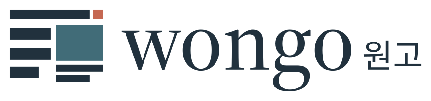
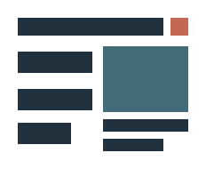
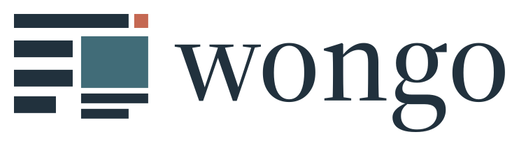

A considered identity for research.
An abstract journal page. A scholarly serif. A quiet accent that marks the detail worth noticing.
Wongo brings Quarto manuscripts, journal requirements and coauthor review into a connected workflow. Its identity follows the same discipline: ordered parts, clear relationships and precise output.
The manuscript grid

The emblem preserves the selected C composition: a header, three text bars, a landscape figure and two captions. Shortened endings give it a distinct silhouette while retaining the logic of a manuscript.
- Construction
- 192 × 150 units
- Clear space
- 20 units minimum; 40 preferred
- Smallest standard icon
- 24 px artwork width; 32 px preferred
- Print emblem
- 6 mm artwork width minimum
- English lockup
- 160 px artwork width minimum
- Bilingual lockup
- 220 px artwork width minimum
Use the supplied assets. Keep their proportions and clear space; do not rebuild the logo using typed letters. Regular SVG canvases already include 20 units of padding.

English lockup · Color
Bilingual lockup · One-color black

Bilingual lockup · Reversed white
Color with a purpose
#21313DText, structure, wordmark.
#416C78Figures, links, primary action.
#C56852The small, deliberate accent.
Let paper and ink lead. Petrol carries functional emphasis. Use the warm annotation color sparingly, echoing the single square in the emblem. This small accent is the subtle nod to Wongo’s KIST origins.
Ink and petrol on white provide approximately 13.36:1 and 5.77:1 contrast. Annotation is 3.83:1: use it for accents rather than small text. Use labeled functional colors for status.
#FFFFFF#F3F5F5#52636D#CCD5D9Scholarly voice, practical reading
Source Serif 4 / Headings
Headings 600. The outlined wordmark uses weight 500 and optical size 60.
Source Sans 3 / Body and interface
Write a manuscript. Check the requirements. Review the changes. Keep the reasoning visible.
Body 400; emphasis 600. Start at 17 px with a 1.6 line height.
Noto Sans KR / Korean
연구의 흐름을 정돈하다.
원고 작성, 검증, 공동저자 검토.
An explicit Korean font keeps the bilingual system consistent.
Source Code Pro / Code
wongo render --target collab
Commands stay distinct from explanatory prose.
Fonts are bundled locally with their Open Font Licenses. Logo lettering is outlined and needs no font installation. The production wordmark is a reproducible interpretation of the approved generated draft.
A manuscript approach to layout
Alignment before decoration
- Use a 4 px spacing unit: 4, 8, 12, 16, 24, 32, 48, 64 and 96.
- Keep reading columns near 68 characters; use a 1120 px maximum page and 32 px gutters.
- Use square corners, flat fills and thin rules. Keep captions close to their figures.
- Use sentence case and a clear heading hierarchy.
Data remains the main subject
- Use direct labels, readable units and consistent panel lettering.
- Use petrol for a main series and annotation for a selected comparison.
- Distinguish series with markers or line styles as well as color.
- Keep branding outside the data area. Journal rules determine manuscript presentation.
Status colors supplement words. Links are underlined; keyboard focus remains visible. Light rules are decorative separators, not the sole boundary of a control.
At working sizes
Square export sizes include padding. At 16 px the full emblem is a recognition cue; use 32 px or larger wherever space allows. Inspect the destination at its actual display size.
Ready for the project
| Need | Use | Format |
|---|---|---|
| Default identity | Bilingual horizontal logo | SVG + transparent PNG |
| English identity | English horizontal logo | SVG + transparent PNG |
| Compact identity | Emblem · Square icon | SVG + PNG at six sizes |
| Quarto document | Brand configuration · Rendered example | YAML + QMD + HTML |
| Application styling | Design tokens · Stylesheet | JSON + CSS |
| Usage and provenance | Full guidelines · Font sources · Approved C draft | Source and reference files |


Copy the complete brand/ folder to reuse the system. In a Quarto HTML document, add brand: brand/_brand.yml to its front matter. For an application, link brand/wongo.css and apply the wongo class to the branded surface.
This is Wongo’s product identity. Use it for software, documentation and presentations; manuscript typography continues to follow the chosen journal profile and manuscript style. Quarto HTML is the validated integration in this kit.